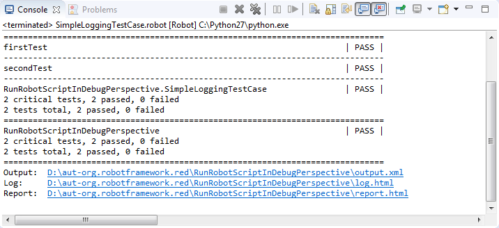

All RED activities are performed within 2 perspectives: Robot , Debug . Former one is used to construct and execute tests, later one is for debugging test-cases. To start working with RED, you should activate Robot perspective first.
Workspace stores all global Eclipse & Red preferences, if not set previously (first run or workspace path is non valid) Eclipse will show dialog to set path. User can always switch workspaces, and if necessary, perform projects import from locations outside of current workspace. Switching Workspace is done by menu action: File -> Switch Workspace ...
Project is an equivalent to folder in OS, it stores files and settings relevant to a group of files.
In order to work with RED, Robot Project has to be created.
Create new Project can be done by:

To create sample test you should invoke action: File -> New -> Other ... -> Robot Framework -> Robot Test Suite. Same action can be accessed by right click menu.
RED consists of 2 different modes of editing, a Table (Ride-like style) and Text style.
By default Table editor is used when TestCase file is opened.
 Additionally, Source tab shows text representation of TestSuite:
Additionally, Source tab shows text representation of TestSuite:

Just like other modern Developments Environments, RED supports content assistance/code completion. When editing tab or item in text editor, press CTRL+SPACE keys to activate hints for Keywords.
To run TestSuite, Run button needs to be selected or right-click menu on file can be issued.

 in Robot part you can specify which test cases should be run by using either tags or include/exclude list of test cases in active project.
in Robot part you can specify which test cases should be run by using either tags or include/exclude list of test cases in active project.

During TestSuite execution, RED displays RobotFramework console and message logs. Those information are available by view Console and Message Log, by default visible in the Robot perspective or by Window -> Show View -> Other.... -> Robot  If any of those 2 views are missing, best way is to reset perspective settings by using action Window -> Reset Perspective ...